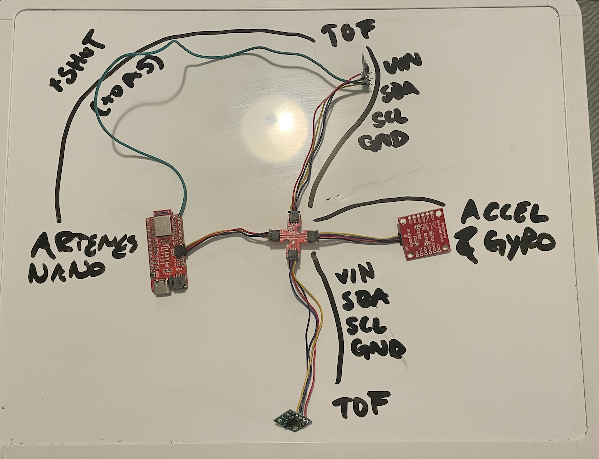
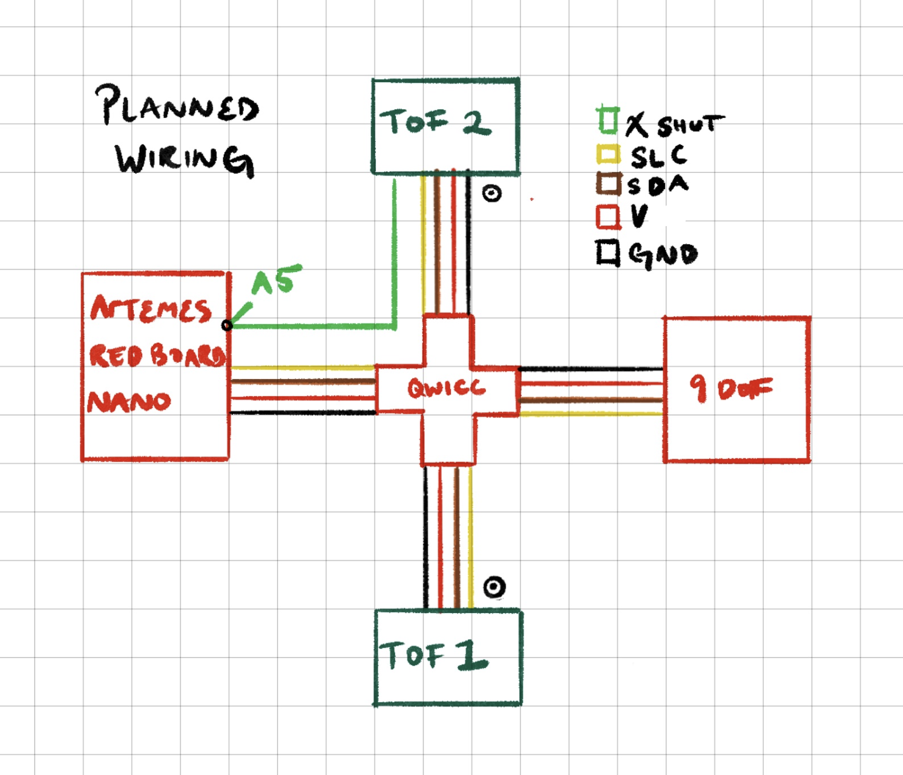
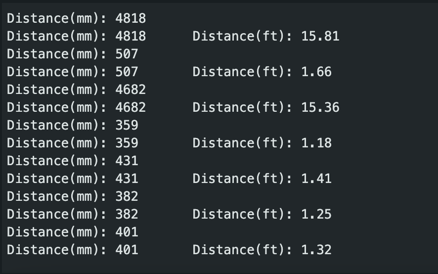
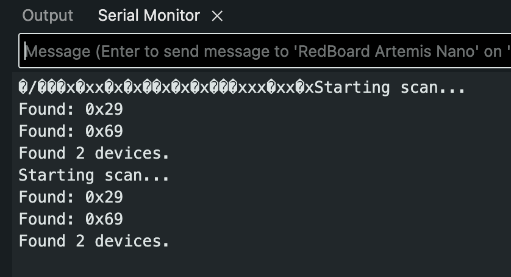
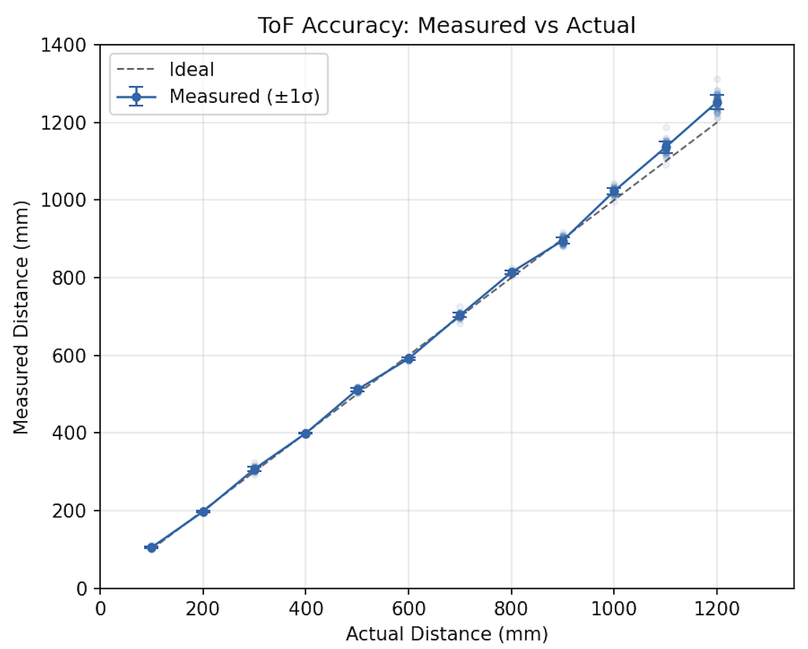
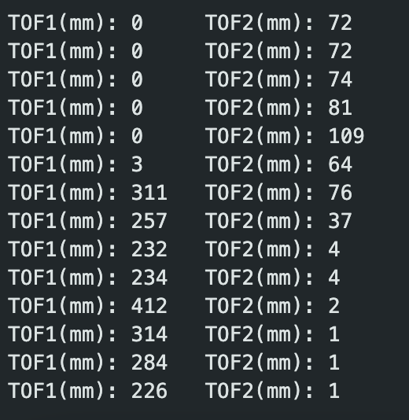

In this lab we set up two VL53L1X Time-of-Flight distance sensors and an ICM-20948 IMU, learning to run both ToF sensors simultaneously (in my case, using XSHUT address reassignment), and sending that data over Bluetooth.
Since the default I2C address as 0x52, 8-bit (according to the datasheet), it'll be 0x29 in the 7-bit format that Arduino uses; essentially it means when the I2C scanner is run, it reports the sensor at address 0x29 (which it did, yay).
Both VL53L1X sensors have the same hardwired I2C address (0x29), so they cannot both be active on the bus at the same time without causing problems. I chose the XSHUT approach over toggling sensors on and off each read. So when you boot it up, the second sensor's XSHUT pin (wired to A2) is held LOW, keeping it off the bus. The first sensor initializes at 0x29, then its address is changed to 0x32. The XSHUT pin is then set HIGH, bringing the second sensor back online at the now-free 0x29. This only needs to happen once at startup, after which both sensors work perfectly. The alternative, which would be continuously enabling and disabling sensors using each an XSHUT would add latency and complexity every single cycle, which kind of defeats the purpose of fast sampling.
I plan to mount both ToF sensors on the front of the robot. This may be be a bad idea that I change later, but for now I want to have one configured for short-range mode and one for long-range mode. The short-range sensor will handle precise, close-distance obstacle detection so I can have really fast and accurate collision avoidance, while the long-range sensor will maybe provide earlier detection of objects farther ahead, which lets me have smoother speed control and actual path planning. Notably, obstacles that could still be missed include objects approaching from the rear or sides, also short obstacles beneath the sensor beam, or thin objects like wires that fall between where it measures in the field of view. Also, any targets beyond the maximum eff. range of the long distance ToF.
The Artemis connects to the QWIIC breakout board, which provides SDA/SCL/3.3V/GND to both ToF sensors and the IMU with chained QWIIC connectors through a center piece. The second ToF sensor's XSHUT pin has an additional wire soldered from it to pin A2 on the Artemis. This pin gave me a large headache, as originally I wanted it to go to A5, then I accidentally soldered it shut, then I tried to do A4 only to realize there is no A4, and then finally cut that off and used A2. Wire lengths were chosen with chassis placement in mind, trying to give myself as much space to work with when assembling later, especially a good length for the ToF sensors that have to go in the front.


The first ToF sensor was connected to the QWIIC breakout board and tested with the SparkFun ReadDistance example.


The VL53L1X has three distance modes. Short mode has a maximum range of a pretty short 1.3m but is less affected by ambient light and provides faster, more reliable readings at close range. Medium mode extends to 3m, and Long mode reaches 4m but is more susceptible to ambient light interference and has slower ranging times. I chose to work with Short mode for now since it's more important for the final robot. I may change my mind on the placement of the second sensor, so I don't want to waste time working with it until I'm certain. But anyway, our main task is object collision prevention so having a good, well calibrated, fast sensor, then that's the best way to work towards our goal.
I tested the sensor accuracy and repeatability by placing a flat surface at known distances and collecting a reading at each distance. The sensor was tested at 100mm intervals from 100mm to 1200mm.

To use two ToF sensors simultaneously, I followed the process I outlined in prelab. There we some issues for many days as I worked on this, as often it would fail to detect the second sensor. It was at this time I rewired it from A5 to A2, because the connection to A5 was lacking and then completely broken when I tried to fix it.
// XSHUT Mech
pinMode(XSHUT_PIN, OUTPUT);
digitalWrite(XSHUT_PIN, LOW); // keeps sensor 2 off
delay(10);
tof1.begin(); // sensor 1 start at 0x29
tof1.setDistanceModeShort();
tof1.setI2CAddress(0x32); // move sensor 1 to 0x32
digitalWrite(XSHUT_PIN, HIGH); // sensor 2 turns on at 0x29, we leave it there
delay(10);
tof2.begin();
tof2.setDistanceModeShort();